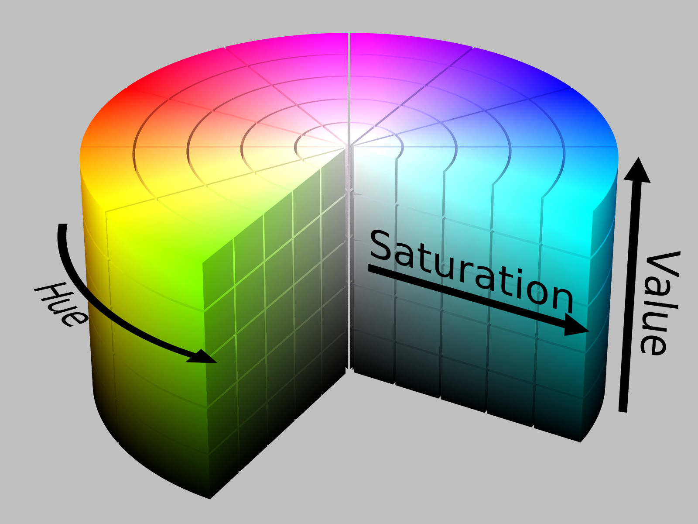
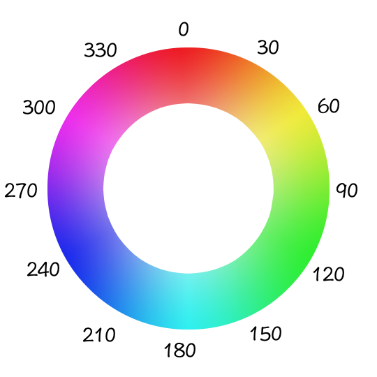

HSB is an alternative color space to RGB. In this model, colors are described by their hue, saturation, and brightness:
- Hue is expressed in degrees, from red(0), through all the colors around the color wheel, and back to red (360).
- Saturation is the amount of color, and ranges between 0 and 100.
- Brighness the amount of light, ranging between 0 and 100. The alpha channel goes from 0 (not visible) to 1 (fully opaque).


To have p5 use HSB instead of RGB, we call colorMode(HSB). Here is the same example from above, using the HSB color mode instead of RGB. Notice how the colors red, green and blue are defined differently now: in RGB, red is defined by (255, 0, 0); in HSB, it is (360, 100, 100).

HSB makes it easier to define color ranges that fit descriptions like these, which would be harder to accomplish using RGB:
- A dark, muted red. For red, we might set the Hue to be somewhere between 350 and 360. To make it dark, we can set Brightness to be between 30 and 50. A Saturation between 20 and 40 will make it muted.
- A light, vibrant blue. What Hue, Saturation and Brighness ranges would you choose to get a color that fits this description?
The ability to define colors in these terms is convenient for designing parametric color palettes. Here is our happy face, with random colors being chosen from HSB ranges. Notice how even though a new combination is generated with each refresh, the color palette retains a certain character.

Now define an HSB color palette and apply it to a drawing from the previous activities.